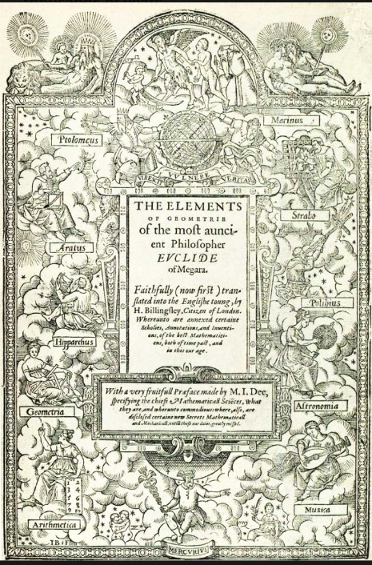
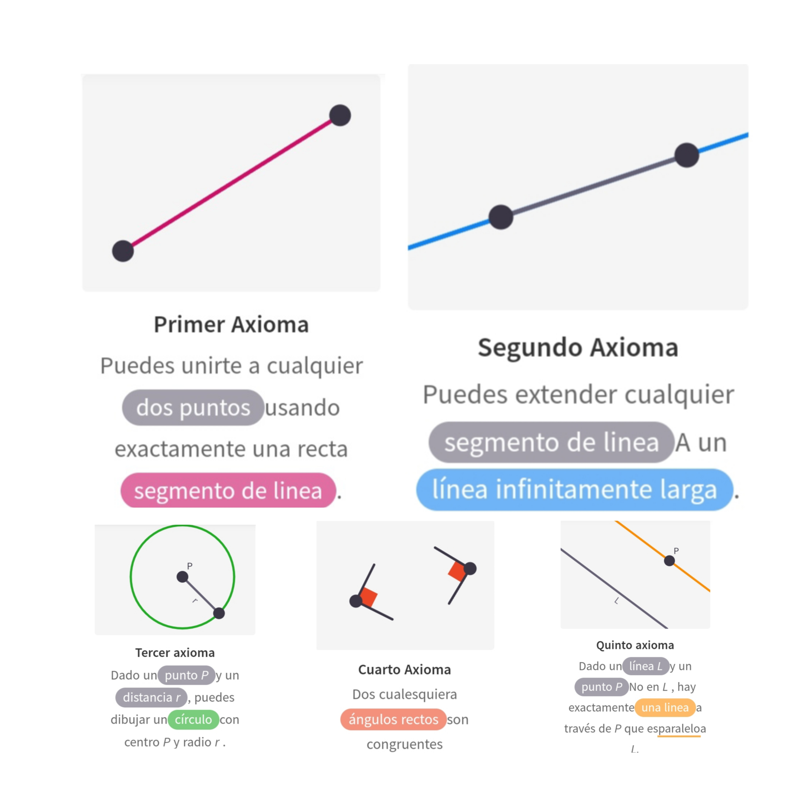
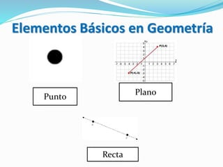
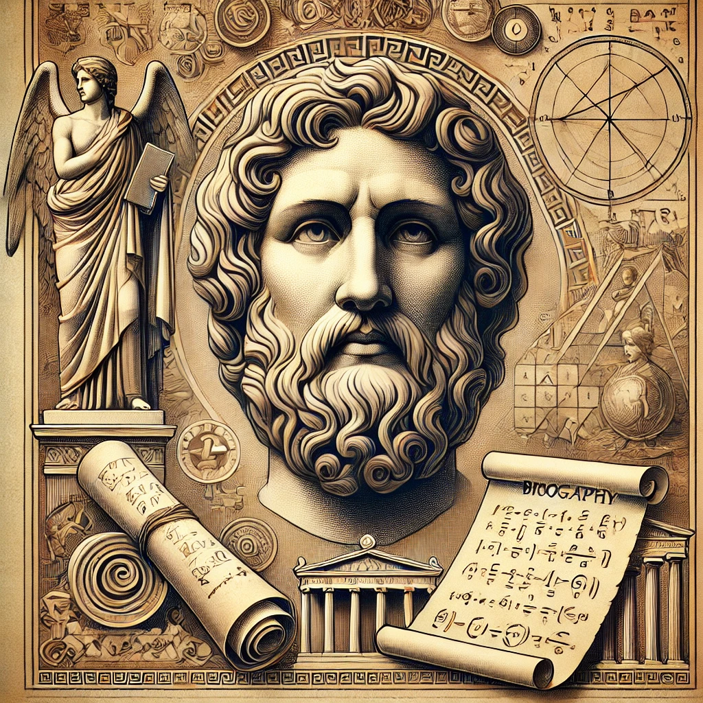

Biografía de Euclides
Nacimiento
Euclides nació alrededor del año 325 a.C. en la ciudad de Alejandría, Egipto.
Estudios
Euclides recibió una educación exhaustiva en matemáticas, astronomía y filosofía en la Escuela de Alejandría.
Enseñanza
Después de sus estudios, Euclides se convirtió en maestro y director de la Escuela de Alejandría, donde enseñó a generaciones de estudiantes.
Aportes a la Geometría
Elementos
Euclides recopiló los conocimientos geométricos de su época en una obra fundamental llamada "Elementos".
Axiomas y Postulados
Estableció un sistema axiomático para la geometría, sentando las bases de una estructura lógica y deductiva.
Teoremas
A partir de los axiomas, Euclides demostró una gran cantidad de teoremas geométricos.
Geometría Euclidiana
Euclides estableció definiciones claras de conceptos geométricos fundamentales como punto, línea, ángulo y plano.
Impacto y Legado
Fundador de la Geometría
Euclides sentó las bases de la geometría como una disciplina científica.
Legado Duradero
La obra de Euclides fue un referente durante más de 2000 años, influenciando generaciones de matemáticos y científicos.